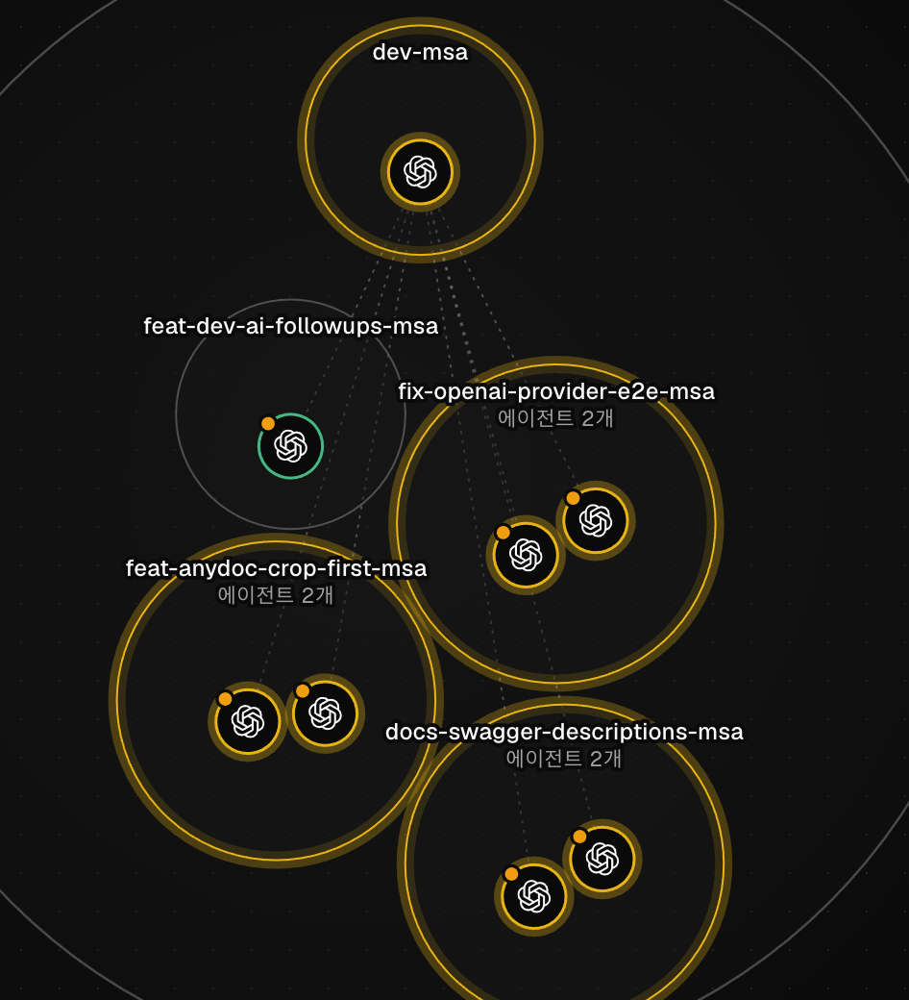

01 Background
A model-deprecation issue led to discovery that some features ignored the user-selected model and used hardcoded models. Changes spread across five repositories. Agents could invent issues, implement only part of a plan or review against decisions that had never reached the issue tracker.
Keep cross-service changes aligned with agreed behavior, while preventing incomplete work and false review findings from turning into further rework.
02 Decisions and review practices
Grouping changes and retaining human decisions
Problem One model issue expanded into cross-service work; deciding every fix separately would duplicate policy decisions.
Experiment and result Grouped related issues by scope. Agents presented options and trade-offs, while I chose policies and required plans and verification records before implementation.
Decision Use agents for exploration and implementation while retaining decisions about product behavior and scope.
Reviewing in a fresh session against recorded decisions
Problem The implementation session was also reviewing its own work, and issues still contained superseded decisions.
Experiment and result Started reviews in a new session, required match/mismatch judgments and compared against the plan. Added decision records to the original issues to reconcile the review basis.
Decision A decision is incomplete until it is recorded where future reviewers can find it.
Checking reviewers and reopening unfinished work
Problem A reviewer claimed roughly 60 days of log retention and proposed new issues for work that should already have been complete.
Experiment and result Rechecking found a log-specific S3 version rule giving roughly 31 days, not 60. Required file and line evidence. Reviewed 31 closed issues, found 7 unfinished and reopened the originals.
Decision Verify findings before changing code. Finish agreed requirements rather than continuously expanding the backlog.
03 Improved processing flow

flowchart TD
H[Human defines scope and chooses trade-offs] --> D[Record decisions in plans and issues]
D --> I[Agents implement per repository]
I --> R[Fresh session reviews against decisions]
R --> E{Finding supported by code evidence}
E -->|Yes| F[Fix within agreed scope and recheck]
E -->|No| Q[Recheck or withdraw finding]
F --> M[Review and repository-owner merge decision]
Q --> ROctober workflow: a fresh review session checks decisions, and findings need file and line evidence before changes are made.
View Mermaid source
flowchart TD
H[Human defines scope and chooses trade-offs] --> D[Record decisions in plans and issues]
D --> I[Agents implement per repository]
I --> R[Fresh session reviews against decisions]
R --> E{Finding supported by code evidence}
E -->|Yes| F[Fix within agreed scope and recheck]
E -->|No| Q[Recheck or withdraw finding]
F --> M[Review and repository-owner merge decision]
Q --> R04 Results and lessons
78 PRs created in 2 days; incomplete closure found in 7 of 31 issues
From the night of October 10 through October 12, agents created 78 PRs and 43 issues across five repositories. Plan-alignment reviews recorded 21 matches among 42 PRs initially and 43 among 45 later; three PRs entered the review set, so the denominator changed. Reviewing 31 recently closed issues found 7 with unfinished requirements, which were reopened with remaining-work checklists. This is separate from the August migration: 16 PRs merged over five days, with 13 required fixes before merge. Agents wrote the code; I set plans and criteria, chose design trade-offs and controlled scope. In October, AI-repository changes merged to dev after review; other repository owners retained merge decisions.
October figures come from my published retrospective. PR creation counts are not merged or deployed feature counts, and review alignment is not a defect-free guarantee. The review population changed, so the two snapshots are not a controlled before/after rate. Broader desktop OAuth work was deferred to keep focus on the agreed changes.